The original, as published: Tony R. Kuphaldt, Lessons In Industrial Instrumentation, PLC analog input scaling and per-unit thinking. CC BY 4.0, https://creativecommons.org/licenses/by/4.0/. Imported as published, from https://www.ibiblio.org/kuphaldt/socratic/sinst/book/liii.pdf https://www.ibiblio.org/kuphaldt/socratic/sinst/book/liii.pdf
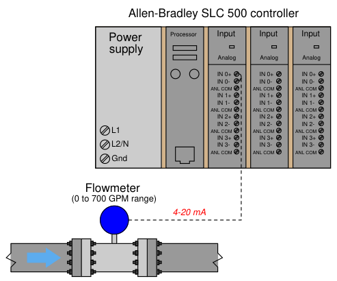
An Allen-Bradley SLC500 programmable logic controller (PLC) uses a 16-bit analog-to-digital converter in its model 1746-NI4 analog input card to convert 4-20 mA signals into digital number values ranging from 3277 (at 4 mA) to 16384 (at 20 mA). However, these raw numbers from the PLC’s analog card must be mathematically scaled inside the PLC to represent real-world units of measurement, in this case 0 to 700 GPM of flow. Formulate a scaling equation to program into the PLC so that 4 mA of current registers as 0 GPM, and 20 mA of current registers as 700 GPM.
We are already given the raw number values from the analog card’s analog-to-digital converter (ADC) circuit for 4 mA and 20 mA: 3277 and 16384, respectively. These values define the domain of our linear graph:
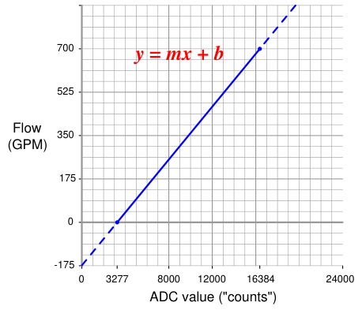
Calculating and substituting the slope (m) value for this equation, using the full rise-over-run of the linear function:
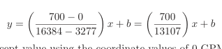
Solving for the y-intercept value using the coordinate values of 0 GPM and 3277 ADC counts:
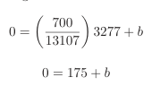
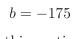
Therefore, our PLC scaling equation for this particular flowmeter is as follows:
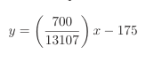
This type of scaling calculation is so common in PLC applications that Allen-Bradley has provided a special SCL (“scale”) instruction just for this purpose. Instead of “slope” (m) and “intercept” (b), the instruction prompts the human programmer to enter “rate” and “offset” values, respectively. Furthermore, the rate in Allen-Bradley’s SCL instruction is expressed as the numerator of a fraction where the denominator is fixed at 10000, allowing fractional (less than one) slope values to be specified using integer numbers. Aside from these details, the concept is exactly the same.
700
Expressing our slope of 13107 as a fraction with 10000 as the denominator is a simple matter of solving for the numerator using cross-multiplication and division:
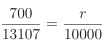
r = 534
Thus, the SCL instruction would be configured as follows5
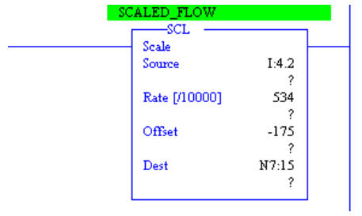
5The “Source” and “Dest” parameters shown in this instruction box refer to special addresses in the PLC’s memory where the input (ADC count) and output (scaled flowrate) values will be found. You need not concern yourself with the meanings of I:4.2 and N7:15, because these addresses are unimportant to the task of deriving a scaling formula.
An illustration some students find helpful in understanding analog signal ranges is to consider the signal range as a length expressed on a number line. For example, the common 4-20 mA analog current signal range would appear as such:
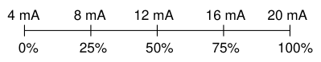
If one were to ask the percentage corresponding to a 14.4 mA signal on a 4-20 mA range, it would be as simple as determining the length of a line segment stretching from the 4 mA mark to the 14.4 mA mark:
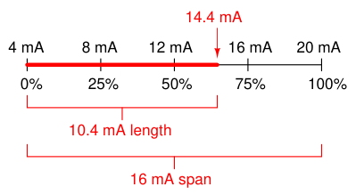
As a percentage, this thick line is 10.4 mA long (the distance between 14.4 mA and 4 mA) over a total (possible) length of 16 mA (the total span between 20 mA and 4 mA). Thus:
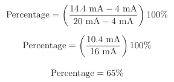
This same “number line” approach may be used to visualize any conversion from one analog scale to another. Consider the case of an electronic pressure transmitter calibrated to a pressure range of −5 to +25 PSI, having an (obsolete) current signal output range of 10 to 50 mA. The appropriate current signal value for an applied pressure of +12 PSI would be represented on the number line as such:
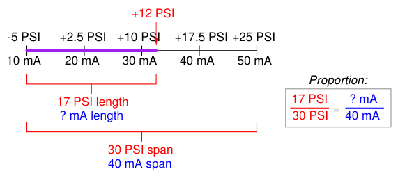
Finding the “length” of this line segment in units of milliamps is as simple as setting up a proportion between the length of the line in units of PSI over the total (span) in PSI, to the length of the line in units of mA over the total (span) in mA:
30 PSI = ? mA
17 PSI
40 mA
Solving for the unknown (?) current by cross-multiplication and division yields a value of 22.67 mA. Of course, this value of 22.67 mA only tells us the length of the line segment on the number line; it does not directly tell us the current signal value. To find that, we must add the “live zero” offset of 10 mA, for a final result of 32.67 mA.
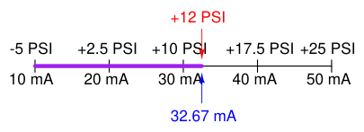
Thus, an applied pressure of +12 PSI to this transmitter should result in a 32.67 mA output signal.
Although it is possible to generate a “custom” linear equation in the form of y = mx + b for any linear-responding instrument relating input directly to output, a more general approach may be used to relate input to output values by translating all values into (and out of) per unit quantities. A “per unit” quantity is simply a ratio between a given quantity and its maximum value. A half-full glass of water could thus be described as having a fullness of 0.5 per unit. The concept of percent (“per one hundred”) is very similar, the only difference between per unit and percent being the base value of comparison: half-full glass of water has a fullness of 0.5 per unit (i.e. 2 of the glass’s full
1 capacity), which is the same thing as 50 percent (i.e. 50 on a scale of 100, with 100 representing complete fullness). Let’s now apply this concept to a realistic 4-20 mA signal application. Suppose you were given a liquid level transmitter with an input measurement range of 15 to 85 inches and an output range of 4 to 20 milliamps, respectively, and you desired to know how many milliamps this transmitter should output at a measured liquid level of 32 inches. Both the measured level and the milliamp signal may be expressed in terms of per unit ratios, as shown by the following graphs:
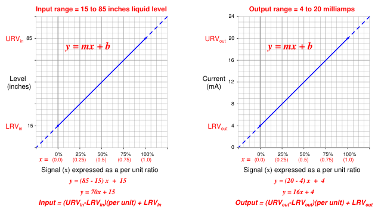
So long as we choose to express process variable and analog signal values as a per unit ratios ranging from 0 to 1, we see how m (the slope of the line) is simply equal to the span of the process variable or analog signal range, and b is simply equal to the lower-range value (LRV) of the process variable or analog signal range. The advantage of thinking in terms of “per unit” is the ability to quickly and easily write linear equations for any given range. In fact, this is so easy that we don’t even have to use a calculator to compute m in most cases, and we never have to calculate b because the LRV is explicitly given to us. The instrument’s input equation is y = 70x + 15 because the span of the 15-to-85 inch range is 70, and the LRV is 15. The instrument’s output equation is y = 16x+4 because the span of the 4-to-20 milliamp range is 16, and the LRV is 4.
If we manipulate each of the y = mx + b equations to solve for x (per unit of span), we may express the relationship between the input and output of any linear instrument as a pair of fractions with the per unit value serving as the proportional link between input and output:
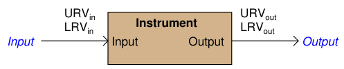
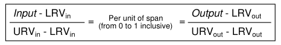
The question remains, how do we apply these equations to our example problem: calculating the milliamp value corresponding to a liquid level of 32 inches for this instrument? The answer to this question is that we must perform a two-step calculation: first, convert 32 inches into a per unit ratio, then convert that per unit ratio into a milliamp value.
First, the conversion of inches into a per unit ratio, knowing that 32 is the value of y and we need to solve for x:
32 = 70x + 15
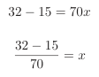
x = 0.2429 per unit (i.e. 24.29%)
Next, converting this per unit ratio into a corresponding milliamp value, knowing that y will now be the current signal value using m and b constants appropriate for the 4-20 milliamp range:
y = 16x + 4
y = 16(0.2429) + 4
y = 3.886 + 4
y = 7.886 mA
Instead of deriving a single custom y = mx+b equation directly relating input (inches) to output (milliamps) for every instrument we encounter, we may use two simple and generic linear equations to do the calculation in two steps with “per unit” being the intermediate result. Expressed in general form, our linear equation is:
y = mx + b
Value = (Span)(Per unit) + LRV
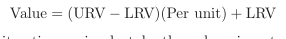
Thus, to find the per unit ratio we simply take the value given to us, subtract the LRV of its range, and divide by the span of its range. To find the corresponding value we take this per unit ratio, multiply by the span of the other range, and then add the LRV of the other range.
Example: Given a pressure transmitter with a measurement range of 150 to 400 PSI and a signal range of 4 to 20 milliamps, calculate the applied pressure corresponding to a signal of 10.6 milliamps. Solution: Take 10.6 milliamps and subtract the LRV (4 milliamps), then divide by the span (16 milliamps) to arrive at 41.25% (0.4125 per unit). Take this number and multiply by the span of the pressure range (400 PSI −150 PSI, or 250 PSI) and lastly add the LRV of the pressure range (150
PSI) to arrive at a final answer of 253.125 PSI.
Example: Given a temperature transmitter with a measurement range of −88 degrees to +145 degrees and a signal range of 4 to 20 milliamps, calculate the proper signal output at an applied temperature of +41 degrees. Solution: Take 41 degrees and subtract the LRV (−88 degrees) which is the same as adding 88 to 41, then divide by the span (145 degrees −(−88) degrees, or 233 degrees) to arrive at 55.36% (0.5536 per unit). Take this number and multiply by the span of the current signal range (16 milliamps) and lastly add the LRV of the current signal range (4 milliamps) to arrive at a final answer of 12.86 milliamps.
Example: Given a pH transmitter with a measurement range of 3 pH to 11 pH and a signal range of 4 to 20 milliamps, calculate the proper signal output at 9.32 pH. Solution: Take 9.32 pH and subtract the LRV (3 pH), then divide by the span (11 pH −3 pH, or 8 pH) to arrive at 79% (0.79 per unit). Take this number and multiply by the span of the current signal range (16 milliamps) and lastly add the LRV of the current signal range (4 milliamps) to arrive at a final answer of 16.64 milliamps.